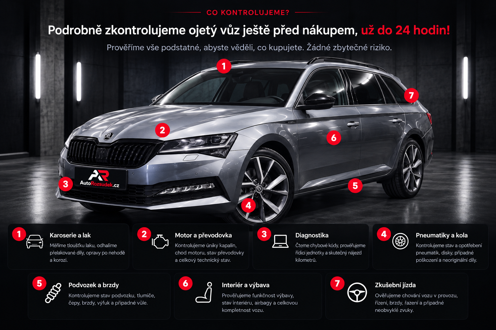

NEZÁVISLÁ KONTROLA OJETÝCH VOZŮ
NEKUPUJTE AUTO
NASLEPO.
Nechte nad ním vynést rozsudek.
Prověříme ojetý vůz před koupí a řekneme vám, co prodávající možná neřekl. Nezávisle. Objektivně. Srozumitelně.
Nezávislebez vazby na prodejce
Srozumitelnějasný výstup z kontroly
České Budějovice a okolípřijedeme za vozem

Lepší znát pravdu
než litovat nákupu.
než litovat nákupu.

PROČ NECHAT AUTO ZKONTROLOVAT?
JEDNO ŠPATNÉ AUTO
MŮŽE STÁT STATISÍCE.
Cílem není auto za každou cenu shodit. Cílem je, abyste přesně věděli, co kupujete.
JAK U NÁS PROBÍHÁ KONTROLA?
OD OBJEDNÁVKY
K ROZSUDKU.
CO DOSTANETE?
PŘEHLEDNÝ REPORT
A JASNÝ ROZSUDEK.
Nejen „dobré / špatné“. Dostanete konkrétní nálezy, fotografie a srozumitelný závěr.
DOPORUČUJEMEVůz bez zásadních problémů.
DOPORUČUJEME S VÝHRADAMINedostatky je vhodné započítat do ceny.
NEDOPORUČUJEMERizika nebo stav vozu nedávají smysl vzhledem ke koupi.
ZKUŠENOST ZÁKAZNÍKŮ
REFERENCE
Reference doplníme po spuštění služby. Už teď je pro ně na webu připravené místo tak, aby později působily přirozeně a důvěryhodně.
★★★★★
„Sem přijde skutečná zkušenost zákazníka s kontrolou vozu.“
Budoucí zákazník★★★★★
„Reference nebudeme vymýšlet. Po spuštění sem vložíme pouze ověřené recenze.“
AutoRozsudek.cz★★★★★
„Cílem je ukázat reálný přínos kontroly před koupí konkrétního auta.“
Budoucí zákazníkKDO ZA TÍM STOJÍ?
AUTO NEPOSUZUJEME
PODLE PRVNÍHO DOJMU.
AutoRozsudek.cz vzniká s jednoduchým cílem: dát kupujícímu před koupí co nejjasnější obraz o skutečném stavu vozu. Bez vazby na prodávajícího a bez tlaku auto za každou cenu koupit.
Kontrola má pomoci rozhodnout se s chladnou hlavou — ať už výsledkem bude koupit, vyjednávat o ceně, nebo od vozu odejít.
01Nezávislý pohledNaším klientem je kupující, ne prodejce vozu.
02Srozumitelný závěrTechnické nálezy přeložíme do normální lidské řeči.
03Lokální službaČeské Budějovice a okolí — bez předstírání celorepublikového pokrytí.
ČASTÉ DOTAZY
NEŽ SE
ROZHODNETE.
Musím být u kontroly osobně?
Nemusíte. Finální podobu služby nastavíme tak, aby bylo možné kontrolu provést i bez vaší osobní účasti a následně vám předat přehledný výstup.
Co když auto kontrolou neprojde?
Smyslem kontroly není vůz „shodit“. Dostanete nálezy a jasný závěr, podle kterého se můžete rozhodnout, zda koupit, vyjednávat, nebo od koupě ustoupit.
Kde službu nabízíte?
Primárně v Českých Budějovicích a okolí. Přesnou oblast dojezdu a případné cestovní podmínky doplníme před spuštěním.
PŘIPRAVUJEME SPUŠTĚNÍ
Máte vyhlédnuté auto?
Objednávkový formulář, ceník a přesný rozsah dojezdu doplníme před ostrým spuštěním služby v Českých Budějovicích a okolí.